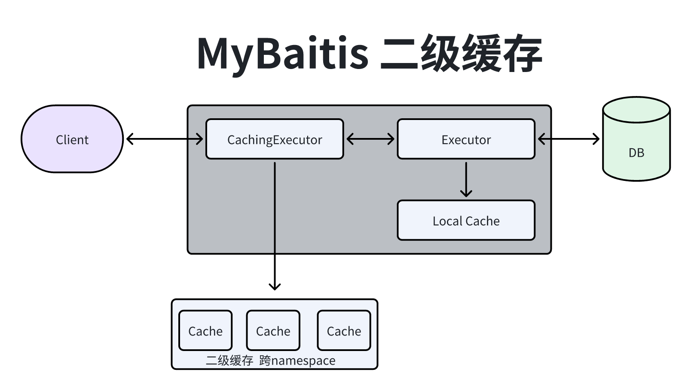

MyBatis使用
一、介绍

551原生JDBC问题:2 -> 问题1: 代码存在硬编码.3 -> 解决: 用配置文件解决硬编码问题, 连接创建应该全局之创建一次就可以了需要一个单独的配置文件进行配置.4 -> 问题2: 执行statement存在硬编码.5 -> 解决: 不同的业务使用不同配置文件.6 -> 问题3: 代码太臃肿.7 -> 解决: 框架只需要调用接口就可以实现JDBC的处理.8
9介绍: MyBatis是apache的一个开源项目iBatis, 2010年这个项目由apache software foundation迁移到了10google code, 并且改名为MyBatis. 2013年11月迁移到Github.11 iBatis一词来源于"internet"和"abatis"的组合, 是一个基于Java的持久层框架. iBatis提供的持久层框架包括SQL Maps和Data Access Objects.12 MyBatis是一款优秀的持久层框架, 它支持定制化SQL;存储过程以及高级映射. MyBatis避免了几乎所有的JDBC代码和手动设置参数以及获取结果集. MyBatis可以使用简单的XML或注解来配置和映射原生信息, 将接口和Java的 POJO(Plain Ordinary Java Object)映射成数据库中的记录.13 14特点: 15 -> 简单易学: 本身就很小且简单. 没有任何第三方依赖, 最简单安装只要两个jar文件+配置几个sql映射文件. 易于学习, 易于使用. 通过文档和源代码, 可以比较完全的掌握它的设计思路和实现.16 -> 灵活: mybatis不会对应用程序或者数据库的现有设计强加任何影响. sql写在xml里, 便于统一管理和优化. 通过sql语句可以满足操作数据库的所有需求.17 -> 解除sql与程序代码的耦合: 通过提供DAO层, 将业务逻辑和数据访问逻辑分离, 使系统的设计更清晰, 更易维护, 更易单元测试. sql和代码的分离, 提高了可维护性.18 -> 提供映射标签, 支持对象与数据库的ORM字段关系映射.19 -> 提供对象关系映射标签, 支持对象关系组建维护.20 -> 提供xml标签, 支持编写动态sql.21 22架构介绍:23 -> 1.API接口层: 提供给外部使用的接口API, 开发人员通过这些本地API来操纵数据库. 接口层一接收到调用请求24就会调用数据处理层来完成具体的数据处理. 25 -> 2.数据处理层: 负责具体的SQL查找;SQL解析;SQL执行和执行结果映射处理等. 它主要的目的是根据调用的请求26完成一次数据库操作. 27 -> 3.基础支撑层: 负责最基础的功能支撑, 包括连接管理;事务管理;配置加载和缓存处理, 这些都是共用的东西, 28将他们抽取出来作为最基础的组件. 为上层的数据处理层提供最基础的支撑. 29
30数据处理层介绍:31 -> 1.加载配置: 配置来源于两个地方, 一处是配置文件, 一处是Java代码的注解, 将SQL的配置信息加载成为一个个MappedStatement对象(包括了传入参数映射配置;执行的SQL语句;结果映射配置), 存储在内存中. 32 -> 2.SQL解析: 当API接口层接收到调用请求时, 会接收到传入SQL的ID和传入对象(可以是Map;JavaBean或者基本33数据类型), Mybatis会根据SQL的ID找到对应的MappedStatement, 然后根据传入参数对象对MappedStatement进34行解析, 解析后可以得到最终要执行的SQL语句和参数. 35 -> 3.SQL执行: 将最终得到的SQL和参数拿到数据库进行执行, 得到操作数据库的结果. 36 -> 4.结果映射: 将操作数据库的结果按照映射的配置进行转换, 可以转换成HashMap;JavaBean或者基本数据类型, 并将最终结果返回. 37
38动态SQL: MyBatis最强大的特性之一就是它的动态语句功能. 如果您以前有使用JDBC或者类似框架的经历. 您就会明白39把SQL语句条件连接在一起是多么的痛苦, 要确保不能忘记空格或者不要在columns列后面省略一个逗号等. 动态语句能40够完全解决掉这些痛苦.41 尽管与动态SQL一起工作不是在开一个party, 但是MyBatis确实能通过在任何映射SQL语句中使用强大的动态SQL来改42进这些状况. 动态SQL元素对于任何使用过JSTL或者类似于XML之类的文本处理器的人来说, 都是非常熟悉的. 在上一版43本中, 需要了解和学习非常多的元素, 但在MyBatis3中有了许多的改进, 现在只剩下差不多二分之一的元素. MyBatis44使用了基于强大的OGNL表达式来消除了大部分元素.45 46集成: 单独使用mybatis是有很多限制的(比如无法实现跨越多个session的事务), 而且很多业务系统本来就是使用spring来管理的事务, 因此mybatis最好与spring集成起来使用.47 48MyBatis源码中使用到的设计模式:49 -> 工厂模式: SqlSessionFactory.50 -> 单例模式: SqlSessionFactory51 -> 建造者模式: SqlSesionFactoryBuilder52 -> 装饰者模式: CachingExecutor Simple Reuse Batch FIFOCache53 -> 代理模式: Spring继承Mybatis SqlSessionInterceptor;MapperProxy;Plugin;Log StatmenLogger;延迟加载ProxyFactory;数据源PooledConnection;模板 Executor BaseExecutor sl4j 定义的抽象类 log4j54 -> 责任链模式: InterceptorChain55 -> 策略模式模式: rounteStatement二、JavaClient使用
POM
131<!-- mybatis依赖 -->2<dependency>3 <groupId>org.mybatis</groupId>4 <artifactId>mybatis</artifactId>5 <version>3.5.6</version>6</dependency>7
8<!-- mysql依赖 -->9<dependency>10 <groupId>mysql</groupId>11 <artifactId>mysql-connector-java</artifactId>12 <version>5.1.35</version>13</dependency>配置
411 2<configuration>6 7 <plugins>8 <!-- 配置分页插件 -->9 <plugin interceptor="com.github.pagehelper.PageInterceptor"></plugin>10 <!-- com.mybatis.util为PageHelper类所在包名 -->11 <!-- <plugin interceptor="com.mybatis.util.PagePlugin"> -->12 <!-- 设置数据库类型 Oracle,Mysql,MariaDB,SQLite,Hsqldb,PostgreSQL六种数据库-->13 <!-- <property name="dialect" value="SQLite" /> -->14 <!-- <property name="pageSqlId" value=".*Page.*" /> -->15 <!-- </plugin> -->16 </plugins>17 18 <properties resource="db.properties"></properties>19 <environments default="development">20 <environment id="development">21 <transactionManager type="JDBC" />22 <dataSource type="POOLED">23 <property name="driver" value="${db.driver}" />24 <property name="url" value="${db.url}" />25 <property name="username" value="${db.username}" />26 <property name="password" value="${db.password}" />27 </dataSource>28 </environment>29 </environments>30 <mappers>31 <mapper resource="UserMapper.xml" />32 </mappers>33 34</configuration>35
36
37<!-- db.properties -->38db.driver=com.mysql.jdbc.Driver39db.url=jdbc:mysql://localhost:3306/kangkang_study?characterEncoding=utf-840db.username=root41db.password=admin
最简单使用
301// PO2public class User {4
5 private int id;6 private String name;7 private int age;8}9
10//Mapper11public interface UserMapper {12 User findUserById(int id);13}14
15//XML16<?xml version="1.0" encoding="UTF-8" ?>17<!DOCTYPE mapper18PUBLIC "-//mybatis.org//DTD Mapper 3.0//EN"19"http://mybatis.org/dtd/mybatis-3-mapper.dtd">20<mapper namespace="cn.mybatis.dmeo.mapper.UserMapper">21 <!-- 注意事项： -->22 <!-- 1：如果parameterType为简单类型（基本类型+String类），#{}中的参数名称可以任意 -->23 <!-- 2：如果parameterType为POJO类型，#{}中的参数名称必须和POJO中的属性名称一致 -->24 <!-- 3：如果resultType为POJO类型，SELECT中的列名和POJO中的属性名称一致 -->25 <select id="findUserById" parameterType="int"26 resultType="cn.mybatis.dmeo.po.User" >27 SELECT * FROM user WHERE id = #{id}28 </select>29</mapper>30
一对一;一对多关联查询使用
1511// PO2public class Orders {4 private int id;5 private int userId;6 private String amount;7 private String produceName;8}9
10public class OrdersExt1 {12 private int id;13 private int userId;14 private String amount;15 private String produceName;16 private User user;17}18
19public class User {21 private int id;22 private String name;23 private int age;24}25
26public class UserExt1 {28 private int id;29 private String name;30 private int age;31 private List<Orders> ordersList;32}33
34// OrderMapper35public interface OrdersMapper {36
37 /**38 * 根据id查询 一对一39 *40 * @param id orderId41 * @return 返回结果42 */43 OrdersExt1 queryByOrderId(int id);44
45 /**46 * 根据userId查询47 *48 * @param userId userId49 * @return 返回结果50 */51 List<Orders> selectOrderByUserId(int userId);52}53
54// OderXML55<?xml version="1.0" encoding="UTF-8" ?>56<!DOCTYPE mapper57 PUBLIC "-//mybatis.org//DTD Mapper 3.0//EN"58 "http://mybatis.org/dtd/mybatis-3-mapper.dtd">59 60<mapper namespace="cn.mybatis.demo.mapper.OrdersMapper">61
62 <resultMap type="cn.mybatis.demo.domain.OrdersExt1" id="ordersAndUserRstMap">63 <id column="id" property="id"/>64 <result column="user_id" property="userId"/>65 <result column="amount" property="amount"/>66 <result column="produce_name" property="produceName"/>67
68 <!-- 69 一对一关联映射70 property:Orders对象的user属性71 javaType：user属性对应 的类型72 -->73 <association property="user" javaType="cn.mybatis.demo.domain.User">74 <!-- column:user表的主键对应的列 property：user对象中id属性-->75 <id column="user_id" property="id"/>76 <result column="name" property="name"/>77 <result column="age" property="age"/>78 </association>79 </resultMap>80
81 <!-- 一对一查询 -->82 <select id="queryByOrderId" resultMap="ordersAndUserRstMap">83 SELECT84 o.id ,85 o.user_id ,86 o.amount ,87 o.produce_name ,88 u.name ,89 u.age90 FROM orders o left91 JOIN user u ON o.user_id = u.id92 WHERE o.id = #{id}93 LIMIT 194 </select>95
96 <select id="selectOrderByUserId" resultType="cn.mybatis.demo.domain.Orders">97 SELECT98 id AS id,99 user_id AS userId,100 amount AS amount,101 produce_name AS produceName102 FROM orders103 WHERE user_id= #{userId}104 </select>105</mapper>106 107
108// UserMapper109public interface UserMapper {110
111 /**112 * 根据userId查询订单信息113 *114 * @param userId 用户id115 * @return 查询返回结果116 */117 UserExt1 queryOrderByUserId(int userId);118}119
120// UserXml121<?xml version="1.0" encoding="UTF-8" ?>122<!DOCTYPE mapper123PUBLIC "-//mybatis.org//DTD Mapper 3.0//EN"124"http://mybatis.org/dtd/mybatis-3-mapper.dtd">125 126<mapper namespace="cn.mybatis.demo.mapper.UserMapper">127
128 <!--129 一对多关系映射130 -->131 <resultMap type="cn.mybatis._03o2M.domain.UserExt1" id="queryOrderByUser">132 <id column="user_id" property="id"/>133 <result column="name" property="name"/>134 <result column="age" property="age"/>135
136 <collection137 property="ordersList"138 column="id"139 select = "cn.mybatis.demo.mapper.OrdersMapper.selectOrderByUserId"></collection>140 </resultMap>141
142 <select id="queryOrderByUserId"143 resultMap="queryOrderByUser">144 SELECT145 u.id ,146 u.name ,147 u.age148 FROM user u149 WHERE u.id = #{userId}150 </select>151</mapper>分页插件PageHelper使用
添加POM
61<!-- 分页插件 -->2<dependency>3 <groupId>com.github.pagehelper</groupId>4 <artifactId>pagehelper</artifactId>5 <version>5.1.6</version>6</dependency>Code
621// 配置参考顶部配置2
3//PO4public class Order {6 private int id;7 private int userId;8 private String amount;9 private String produceName;10}11
12// Mapper13public interface OrderMapper {14 List<Order> queryAll();15}16
17// XML18<?xml version="1.0" encoding="UTF-8" ?>19<!DOCTYPE mapper20 PUBLIC "-//mybatis.org//DTD Mapper 3.0//EN"21 "http://mybatis.org/dtd/mybatis-3-mapper.dtd">22<mapper namespace="cn.mybatis._04pageHelper.mapper.OrderMapper">23 <select id="queryAll" resultType="cn.mybatis.demo.domain.Order">24 SELECT25 id AS id,26 user_id AS userId,27 amount AS amount,28 produce_name AS produceName29 FROM orders30 </select>31</mapper>32
33 34// 测试35public class PageHelperDemoTest {36
37 private SqlSessionFactory sqlSessionFactory;38
39 /**40 * 初始化一个sqlSessionFactory41 */42 43 public void init() throws Exception{44 // 加载全局配置文件（同时把映射文件也加载了）45 String resource = "04/SqlMapConfig.xml";46 InputStream inputStream = Resources.getResourceAsStream(resource);47 // sqlsessionFactory需要通过sqlsessionFactoryBuilder读取全局配置文件信息之后48 sqlSessionFactory = new SqlSessionFactoryBuilder().build(inputStream);49 }50
51 52 public void testQueryOrderByUserId() {53 //创建sqlSession对象54 SqlSession sqlSession = sqlSessionFactory.openSession();55 OrderMapper orderMapper = sqlSession.getMapper(OrderMapper.class);56 57 PageHelper.startPage(0,5);58 List<Order> orders = orderMapper.queryAll();59 PageInfo pageInfo = new PageInfo(orders);60 System.out.println(pageInfo);61 }62}MyBaits缓存使用配置

431介绍: 2 -> 一级缓存: 作用域一个会话中(SqlSession), 默认是开启的.3 --> 失效: 执行修改操作(insert;update;delete)就会失效, 或执行clearCache也会失效.4 --> 缺点: 缓存不能跨会话共享, 所以不能在分布式环境下使用.5 -> 二级缓存: 作用于Mapper(namespace), 可以被多个SqlSession给共享, 生命周期和应用同步, 默认关闭.6 --> 失效: 发生修改操作会失效.7
8配置:9<settings>10 <!-- 打印查询语句 -->11 <setting name="logImpl" value="STDOUT_LOGGING" />12
13 <!-- 控制全局缓存（二级缓存）-->14 <setting name="cacheEnabled" value="true"/>15
16 <!-- 延迟加载的全局开关。当开启时，所有关联对象都会延迟加载。默认 false -->17 <!--<setting name="lazyLoadingEnabled" value="true"/>-->18
19 <!-- 当开启时，任何方法的调用都会加载该对象的所有属性。默认 false，可通过select标签的 fetchType来覆盖-->20 <!--<setting name="aggressiveLazyLoading" value="false"/>-->21 22 <!-- Mybatis 创建具有延迟加载能力的对象所用到的代理工具，默认JAVASSIST -->23 <!--<setting name="proxyFactory" value="CGLIB" />-->24 25 <!-- STATEMENT级别的缓存，使一级缓存，只针对当前执行的这一statement有效 -->26 <!--<setting name="localCacheScope" value="STATEMENT"/>-->27 <!--<setting name="localCacheScope" value="SESSION"/>-->28
29</settings>30
31sql.xml中的配置32
33< cache 34 type ="org.apache.ibatis.cache.impl.PerpetualCache"35 <!—-最多缓存对象个数，默认 1024-->36 size ="1024" 37 <!—-回收策略-->38 eviction ="LRU" 39 <!—-自动刷新时间 ms，未配置时只有调用时刷新-->40 flushInterval ="120000"41 <!— 默认是 false（安全），改为 true 可读写时，对象必须支持序列化 -->42 readOnly =" false"43/> MyBaitis延迟加载配置
381介绍: 延迟加载(懒加载), 在关联查询的时候, 按照设置延迟对关联对象的select查询. 延迟加载可以有效减少数据库的压力. 2注意: MyBatis只针对关联对象有延迟设置.3使用场景:4 -> 在使用一对多;多对多使用延迟加载.5 -> 在使用一对一;多对一的时候使用立即加载.6
7
8配置:9<settings>10 <!-- 延迟加载的全局开关。当开启时，所有关联对象都会延迟加载。默认 false -->11 <setting name="lazyLoadingEnabled" value="true"/>12
13</settings>14
15
16
17sql查询xml:18 <!-- 声明这个 namespace 使用二级缓存 -->19 <cache/>20 <resultMap id="queryUser" type="cn.mybatis.demo.domain.User">21 <id property="id" column="id" />22 <result property="age" column="age" />23 <result property="name" column="name" />24
25 <!--嵌套查询发送远程sql-->26 <collection property="orderList" column="id"27 fetchType="lazy"28 select="cn.mybatis.demo.mapper.OrderMapper.queryOrdersByUserId"/>29 </resultMap>30
31 <select id="queryByUserId" resultMap="queryUser" >32 SELECT33 u.id ,34 u.name ,35 u.age36 FROM user u37 WHERE u.id = #{id}38 </select>自定义实现MyBatis分页插件
641分页插件拦截器:2
3import org.apache.ibatis.builder.StaticSqlSource;4import org.apache.ibatis.executor.Executor;5import org.apache.ibatis.mapping.BoundSql;6import org.apache.ibatis.mapping.MappedStatement;7import org.apache.ibatis.mapping.SqlSource;8import org.apache.ibatis.plugin.*;9import org.apache.ibatis.session.ResultHandler;10import org.apache.ibatis.session.RowBounds;11import java.lang.reflect.Field;12
13({(type = Executor.class, method = "query",14 args = {MappedStatement.class, Object.class, RowBounds.class, ResultHandler.class})})15public class MyPageInterceptor implements Interceptor {16
17 /**18 * 代理增强19 */20 21 public Object intercept(Invocation invocation) throws Throwable {22 System.out.println("将逻辑分页改为物理分页");23 Object[] args = invocation.getArgs();24 MappedStatement ms = (MappedStatement) args[0]; // MappedStatement25 BoundSql boundSql = ms.getBoundSql(args[1]); // Object parameter26 RowBounds rb = (RowBounds) args[2]; // RowBounds27 // RowBounds为空，无需分页28 if (rb == RowBounds.DEFAULT) {29 return invocation.proceed();30 }31
32 // 将原 RowBounds 参数设为 RowBounds.DEFAULT，关闭 MyBatis 内置的分页机制33 //args[2] = RowBounds.DEFAULT;34
35 // 在SQL后加上limit语句36 String sql = boundSql.getSql();37 String limit = String.format("LIMIT %d,%d", rb.getOffset(), rb.getLimit());38 sql = sql + " " + limit;39
40 // 自定义sqlSource41 SqlSource sqlSource = new StaticSqlSource(ms.getConfiguration(), sql, boundSql.getParameterMappings());42
43 // 修改原来的sqlSource44 Field field = MappedStatement.class.getDeclaredField("sqlSource");45 field.setAccessible(true);46 field.set(ms, sqlSource);47
48 // 执行被拦截方法49 return invocation.proceed();50 }51
52 /**53 * 创建代理对象爱ing54 */55 56 public Object plugin(Object target) {57 return Plugin.wrap(target,this);58 }59}60
61配置加载插件62<plugins>63 <plugin interceptor="cn.mybatis.demo.interceptor.MyPageInterceptor"></plugin>64</plugins>三、Spring使用
POM
61<!--Mybatis与Spring整合包-->2<dependency>3 <groupId>org.mybatis</groupId>4 <artifactId>mybatis-spring</artifactId>5 <version>2.0.6</version>6</dependency>Mybatis配置文件
601 2<configuration>6 7 <!-- 参数设置 -->8 <settings>9 <setting name="mapUnderscoreToCamelCase" value="true"/>10 <!-- 打印查询语句 -->11 <setting name="logImpl" value="STDOUT_LOGGING" />12
13 <!-- 延迟加载的全局开关。当开启时，所有关联对象都会延迟加载。默认 false -->14 <setting name="lazyLoadingEnabled" value="true"/>15 <!-- 当开启时，任何方法的调用都会加载该对象的所有属性。默认 false，可通过select标签的 fetchType来覆盖-->16 <setting name="aggressiveLazyLoading" value="false"/>17 <!-- Mybatis 创建具有延迟加载能力的对象所用到的代理工具，默认JAVASSIST -->18 <!--<setting name="proxyFactory" value="CGLIB" />-->19 </settings>20
21 <!-- 类型别名 -->22 <!-- <typeAliases>23 <package name="com.gupaoedu.crud.bean"/>24 <!–25 <typeAlias alias="Department" type="com.gupaoedu.crud.bean.Department" />26 –>27 </typeAliases>-->28
29 <!--分页插件的注册-->30 <plugins>31 <plugin interceptor="com.github.pagehelper.PageInterceptor">32 <!-- 4.0.0以后版本可以不设置该参数 ,可以自动识别33 <property name="dialect" value="mysql"/> -->34 <!-- 该参数默认为false -->35 <!-- 设置为true时，会将RowBounds第一个参数offset当成pageNum页码使用 -->36 <!-- 和startPage中的pageNum效果一样-->37 <property name="offsetAsPageNum" value="true"/>38 <!-- 该参数默认为false -->39 <!-- 设置为true时，使用RowBounds分页会进行count查询 -->40 <property name="rowBoundsWithCount" value="true"/>41 <!-- 设置为true时，如果pageSize=0或者RowBounds.limit = 0就会查询出全部的结果 -->42 <!-- （相当于没有执行分页查询，但是返回结果仍然是Page类型）-->43 <property name="pageSizeZero" value="true"/>44 <!-- 3.3.0版本可用 - 分页参数合理化，默认false禁用 -->45 <!-- 启用合理化时，如果pageNum<1会查询第一页，如果pageNum>pages会查询最后一页 -->46 <!-- 禁用合理化时，如果pageNum<1或pageNum>pages会返回空数据 -->47 <property name="reasonable" value="true"/>48 <!-- 3.5.0版本可用 - 为了支持startPage(Object params)方法 -->49 <!-- 增加了一个`params`参数来配置参数映射，用于从Map或ServletRequest中取值 -->50 <!-- 可以配置pageNum,pageSize,count,pageSizeZero,reasonable,orderBy,不配置映射的用默认值 -->51 <!-- 不理解该含义的前提下，不要随便复制该配置 -->52 <property name="params" value="pageNum=start;pageSize=limit;"/>53 <!-- 支持通过Mapper接口参数来传递分页参数 -->54 <property name="supportMethodsArguments" value="true"/>55 <!-- always总是返回PageInfo类型,check检查返回类型是否为PageInfo,none返回Page -->56 <property name="returnPageInfo" value="check"/>57 </plugin>58 </plugins>59
60</configuration>SpringContext配置文件
451 2<beans xmlns="http://www.springframework.org/schema/beans"3 xmlns:xsi="http://www.w3.org/2001/XMLSchema-instance"4 xmlns:context="http://www.springframework.org/schema/context"5 xsi:schemaLocation="http://www.springframework.org/schema/beans6 http://www.springframework.org/schema/beans/spring-beans-2.0.xsd7 http://www.springframework.org/schema/context8 http://www.springframework.org/schema/context/spring-context.xsd ">9
10 <context:component-scan base-package="cn.mybatis.demo.mapper">11 <!--<context:include-filter type="annotation" expression="org.springframework.stereotype.Controller"></context:include-filter>-->12 </context:component-scan>13
14 <bean id="jdbc" class="org.springframework.beans.factory.config.PropertyPlaceholderConfigurer">15 <property name="locations" value="classpath*:07/jdbc.properties"/>16 </bean>17
18 <!-- Spring的连接池 -->19 <bean id="dataSource" class="org.springframework.jdbc.datasource.DriverManagerDataSource">20 <property name="driverClassName" value="${driverClassName}"/>21 <property name="url" value="${url}"/>22 <property name="username" value="${username}"/>23 <property name="password" value="${password}"/>24 </bean>25
26 <!-- 在Spring启动时创建 sqlSessionFactory -->27 <bean id="sqlSessionFactory" class="org.mybatis.spring.SqlSessionFactoryBean">28 <property name="configLocation" value="classpath:07/SqlMapConfig.xml"></property>29 <property name="mapperLocations" value="classpath:07/mapper/*Mapper.xml"></property>30 <property name="dataSource" ref="dataSource"/>31 </bean>32
33 <!--Mapper注解扫描包-->34 <bean id="mapperScanner" class="org.mybatis.spring.mapper.MapperScannerConfigurer">35 <property name="basePackage" value="cn.mybatis.demo.mapper"/>36 </bean>37
38
39 <!--配置一个可以执行批量的sqlSession，全局唯一，单例 -->40 <bean id="sqlSession" class="org.mybatis.spring.SqlSessionTemplate">41 <constructor-arg ref="sqlSessionFactory"></constructor-arg>42 <constructor-arg value="BATCH"></constructor-arg>43 </bean>44
45</beans>使用
811// PO2public class User {4 private int id;5 private String name;6 private int age;7}8
9// Mapper10public interface UserMapper {11
12 /**13 * 根据userId查询订单信息14 *15 * @param id 用户id16 * @return 查询返回结果17 */18 User queryByUserId(int id);19
20 /**21 * 根据id进行修改22 *23 * @param id id24 * @param name name25 */26 void updateById(("id") int id, ("name") String name);27
28 /**29 * 查询所有30 */31 List<User> queryAll(RowBounds rb);32}33
34// XML35<?xml version="1.0" encoding="UTF-8" ?>36<!DOCTYPE mapper37PUBLIC "-//mybatis.org//DTD Mapper 3.0//EN"38"http://mybatis.org/dtd/mybatis-3-mapper.dtd">39<mapper namespace="cn.mybatis._07MybatisSpring.mapper.UserMapper">40 <!-- 声明这个 namespace 使用二级缓存 -->41
42 <select id="queryByUserId" resultType="cn.mybatis._07MybatisSpring.domain.User" >43 SELECT44 u.id ,45 u.name ,46 u.age47 FROM user u48 WHERE u.id = #{id}49 </select>50 <select id="queryAll" resultType="cn.mybatis._07MybatisSpring.domain.User">51 SELECT52 u.id ,53 u.name ,54 u.age55 FROM user u56 </select>57
58
59 <update id="updateById">60 UPDATE user61 SET62 name = #{name}63 WHERE id = #{id}64 </update>65</mapper>66 67 68// 测试69(SpringJUnit4ClassRunner.class)70(locations = {"classpath:07/applicationContext.xml"})71public class MapperTest {72 73 private UserMapper userMapper;74 75 public void testUserMapper() throws Exception {76 User user = userMapper.queryByUserId(121);77 System.out.println(user);78
79 }80}81